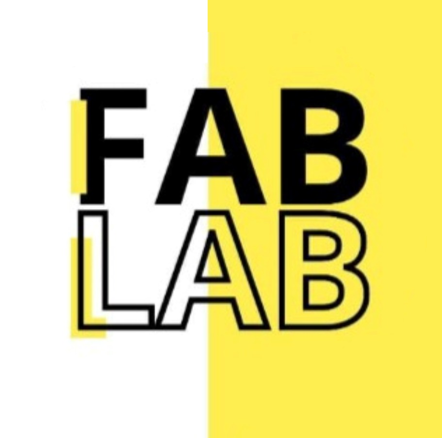

<footer class="bg-fablab-bg text-fablab-text-light px-6 py-10">
  <div
    class="max-w-7xl mx-auto flex flex-row justify-between items-center gap-8"
  >
    <div class="flex items-center gap-4 text-center md:text-left">
      
      <p class="text-sm leading-snug text-fablab-text-primary">
        <span class="font-semibold text-fablab-text-primary"
          >Fablab Inacap Maipú</span
        ><br />
        Fundado, liderado por y para estudiantes c:
      </p>
    </div>

    <div class="flex space-x-4">
      <a
        href="#"
        class="text-fablab-accent hover:text-fablab-primary transition"
        aria-label="Instagram"
      >
      </a>
    </div>
  </div>

  <div
    class="border-t border-fablab-border mt-10 pt-4 text-sm text-center text-fablab-text-secondary"
  >
    ©2025 Fablab Inacap Maipú. Todos los derechos reservados.
  </div>
</footer>
